Events
Teaching has always developed alongside research, providing an opportunity to test methods, exchange ideas and learn from different academic and professional contexts. Since 2017 this has included intensive courses for the Bachelor of Urban Planning at the Gengdan Institute of Beijing University of Technology, together with workshops and masterclasses at the University of Alicante, HafenCity University Hamburg and other institutions.
The remainder of this section gathers conference presentations, invited talks and workshops delivered over the years. They include contributions to ISUF, AESOP, ECOMM, IFKAD, KES and the CityScience Summit, as well as the metaMorphology workshops organised with SPIN Unit across Europe. Whether in classrooms, conferences or hands-on workshops, the aim has remained the same: sharing practical methods for understanding cities through data while connecting research with planning and real-world decision making.
No events match that search.
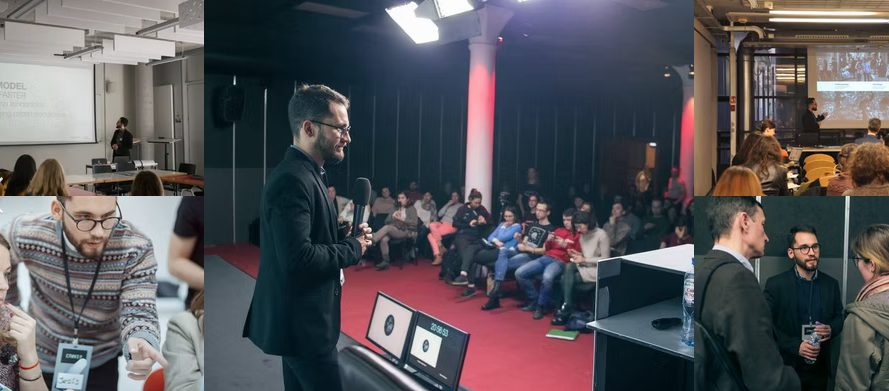
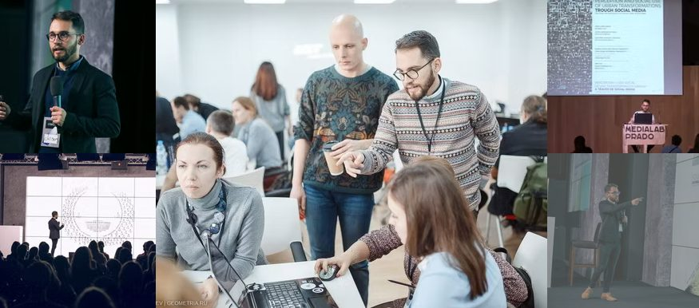
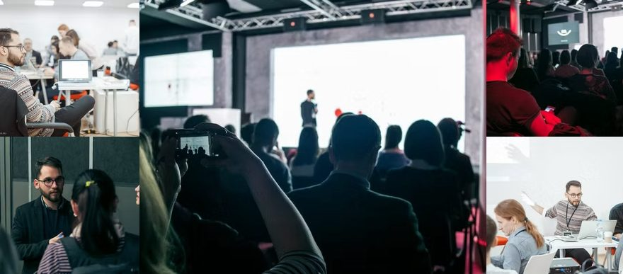
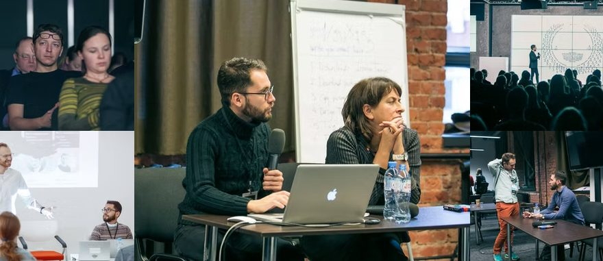
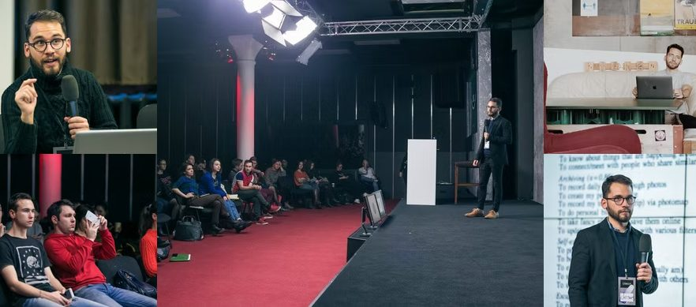
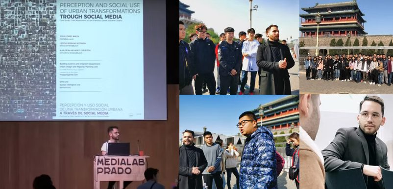
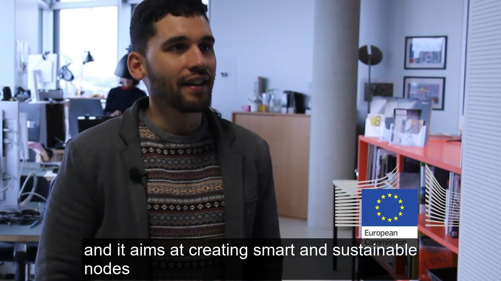
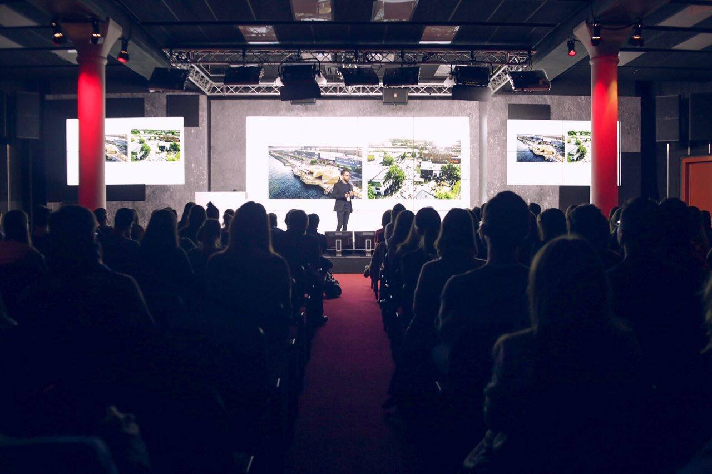
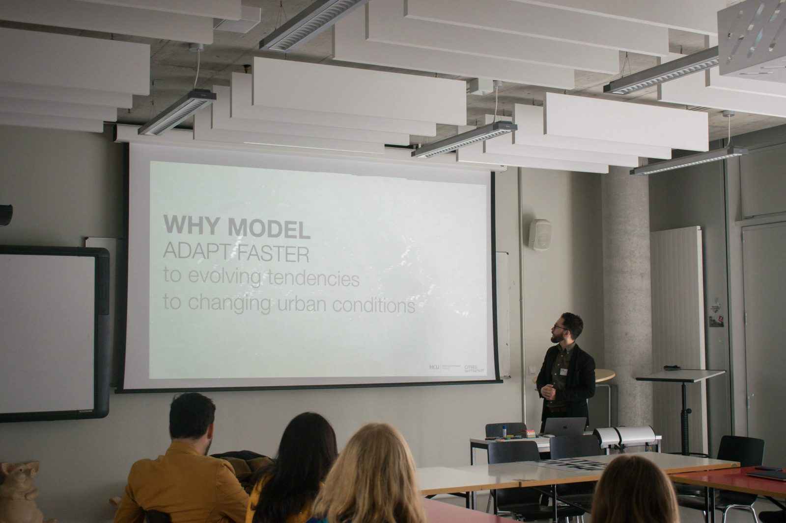
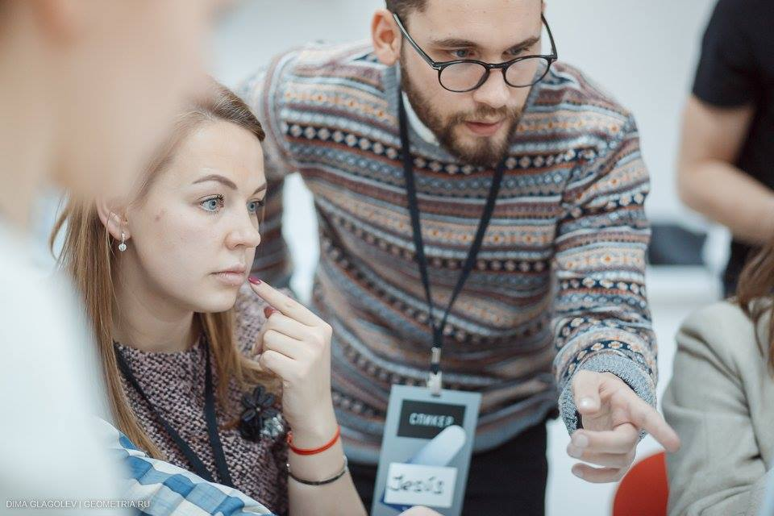
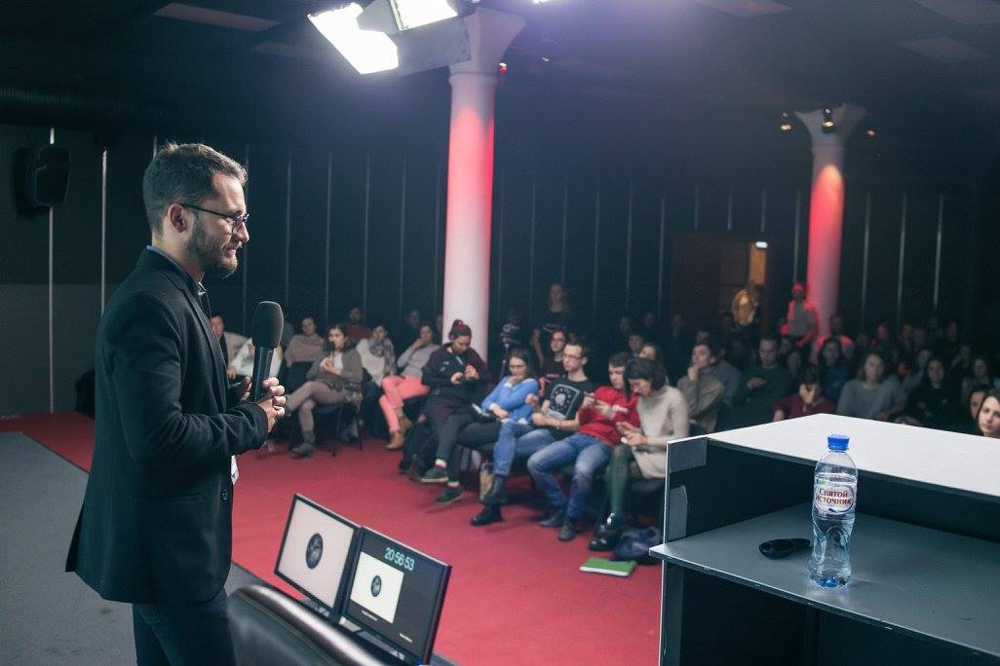
Pictures by SocialScienceLab during workshops and conferences in Moscow and Yekaterinburg.
Press
Coverage of the research in national and international media.
Nothing matches that search.